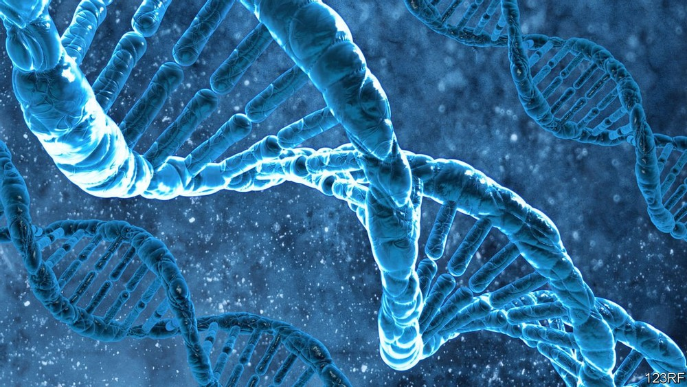

| Soundfile Name | Description | Embedded MP3 File and Source |
|---|---|---|
| bat_echolocation.mp3 |
A fx sound file depicting echolocation in bats. Bats use echolocation to hunt for food,
identify their surroundings, and for social interactions. For bats, it even provides the means
for identifying individuals (Yovel et al, 2009).
Bio-sonar-inspired technologies provide a window into the complex lives of mammals who depend on echolocation, and thereby support the argument that technological advancements provide advancements to research. |
Source of recording: "Bats Sound" on YouTube |
| tawny_owl_call.mp3 | Ornithologists studying owls have, thanks to improvements made to amplification sound equipments, been able studying owl species movements, strategies and behaviours by sampling sounds from them and mimicking the recordings back into their habitats in hope of a response. Due to their incredible hearing and range, this was previously much harder to accomplish. The tawny owl is an owl species commonly studied by researchers, and their call is included in this row. |
Source of recording: "Tawny Owl Call" on YouTube |
| bats_cauldron_sounds.mp3 | Improvements to recording equipments and softwares allow researchers to isolate frequencies belonging to individuals amongst a social population (e.g. bats, as per Hase et al. 2018). This, in the case of bats, helps study their social structures and behaviour. A recording of a cauldron (a group) of communicating bats is included in this row. It is largely still unclear how bats avoid confusion in-flight amidst all this interference (Hase et al. 2018). |
Source of recording: "Bats Sound Effect Flying in Cave Noise - Copyright Free" on YouTube |
| Image Name | Description | Embedded Image File and Source |
| thermal-imaging.jpg | Increasingly, researchers have been phasing out night vision surveillance technologies in favor for thermal imaging. This is incredibly favorable for spotting hidden nocturnal animals such as bats and owls (see image attached, featuring an in-flight barn owl), as thermal imaging is not reliant on light to work. Thermal imaging equipment is expensive, and due to poorer funding, this used to be a larger barrier to entry for many researchers than it is today. However, it is important to note that thermal imaging it not an absolute substitute for night vision, with both having their advantages and drawbacks. |

Image Source: McCafferty, 2013 |
| genomics_dna.jpg | Genomics, as a field, is but a few decades young, with DNA sequencing methods being first developed in the late '70s. It is a field, perhaps unlike any other, where the advancement of technologies is pivotal to its long term success. |

Image Source: The Economist |
| drone.png | Drones are more frequently being used in assessing potential ecological threats from afar, being able to both capture more footage and distance. Additionally, it paves the way for new scientific innovation through adopting these machines to a wider range of new and experimental methodologies. The-Scientist reported on such applications for drones, stating a PhD student at Macquarie University used drones to capture biological data pertaining to the blow from a whale's blowhole, which contains DNA, hormones, as well as bacteria. |
Image Source: The-Scientist |
| Video Name | Text Description WHY | Embedded Video File and Source |
| rat_tickled.mp4 |
Tickling in rats produces ultrasonic high frequency "giggles" inaudible to the human ear.
These sounds are picked up by specialized microphone equipment, and is a simple example of how technology may benefit scientific research in biology. |
Footage taken from Scientific American on YouTube |
| RJF_optimism.mp4 |
This clip shows a methodology for guaging optimism through
associative learning in the wild chicken, the Red Jungle Fowl (G.g. gallus)(RJF).
Ethology is one of the research fields within Animal Biology that suffer from poorer funding in general, despite being a growing field. The methodology conveyed in the video is generally a sound way of testing associative and reversal learning, although it is susceptible to a wider range of human errors. Additionally, whether this methodology effectively encompasses optimism as an observable behaviour remains questionable, due to a several factors not accounted for in this expirement. Innovate technologies can improve on such methods by, for instance, embracing 3D printing to better design and create testing arenas featuring stables and which, when joint with electrical engineering and scripts, may automate and register the chicken's test times, movement patterns and more. This data can subsequently be ran through a local database and statistical models can be ran automatically from this data. Such developments would effectively eliminate a larger degree of human bias and error, as well as save the researcher time and money in the long-term. This, consequently, may provide room for additional research in these subjects research subjects (e.g., studying boldness as well as various other observable behaviours in the RJF). |
Footage taken from the LIU website |
| opsin-3.mp4 |
Opsin-3 is a gene protein found in human retina cells and is responsible for providing us access to a wider range
of colors within the color spectrum.
It is believed to be evolved as a result of a mutation in a duplicate gene of opsin-2. Colorblind individuals lack opsin-3, or the gene itself may be knocked out (inactive) or otherwise mutated. Most mammals, including primates, are colorblind to varying color ranges that exist on the spectrum. In the shown clip, AAVs (adeno-associated viruses) were genetically engineered to inject the opsin-3 gene into the retina cells of a squirrel-monkey (Saimiri)(not shown in the footage), resulting in the test subject being able to successfully identify and pass color tests it previously had failed due to the limited range of visual colors that was available to it. The video both directly and indirectly showcases the importance of technological advancements to modern research. Currently, aav injections are considered an expiremental treatment for colorblindness in humans. |
Footage snippet taken from "Your Inner Fish - Ep.3: Your Inner Monkey" on YouTube |